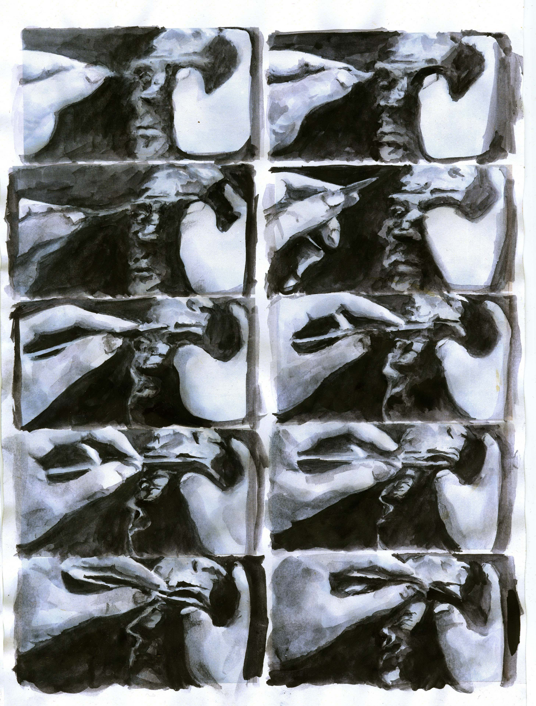

Christina Sarli
introduction
 I could never dedicate myself to a single material or process.
Certain materials have come and gone with time. During my undergraduate years, I was exposed to anatomy, geometry and art theory. I still find myself looking for connections with the concerns of the larger art world. I am by no means isolated from the art world. I just figure, I need art more than the world needs art. Artistic processes which were introduced to me during my art education have helped me personalize any influence— reshape it, mock it, brutalize it, mess with the opposites and create works in my own terms: control and freedom. My artistic practice could be seen as a kind of diary writing: purgative, theatrical and multisensory.
I still find myself questioning the dominance of visual perception in fine art. Texture, touch, smell, taste and sound are essential in my work. The introduction of haptic perception through textured surfaces was initially a semi-conscious choice in my practice, but has developed into a conscious decision to always include two or more sensory modes in my works. These sense pairs are typically:
Sight | Touch
Sight | Smell | Taste
Sight | Hearing
In my works, I use a hybrid of traditional and non-traditional mediums and materials. These include found objects, sculptural fragments, latex, silicone, cotton, velvet, thread, flocking, pigments and resin. My techniques combine painting, drawing and printmaking practices beyond the confines of paper-based traditions.
My works are concerned with themes of displacement, chaos, homesickness, childhood, memory, feminism, sexuality and gender. Often, this content is explored from an autobiographical perspective. I use multisensory language to approach this confronting thematic material from an ‘Amor Fati’ philosophical position – reframing sensitive narratives as potentially beautiful, peculiar, or ironic.
I could never dedicate myself to a single material or process.
Certain materials have come and gone with time. During my undergraduate years, I was exposed to anatomy, geometry and art theory. I still find myself looking for connections with the concerns of the larger art world. I am by no means isolated from the art world. I just figure, I need art more than the world needs art. Artistic processes which were introduced to me during my art education have helped me personalize any influence— reshape it, mock it, brutalize it, mess with the opposites and create works in my own terms: control and freedom. My artistic practice could be seen as a kind of diary writing: purgative, theatrical and multisensory.
I still find myself questioning the dominance of visual perception in fine art. Texture, touch, smell, taste and sound are essential in my work. The introduction of haptic perception through textured surfaces was initially a semi-conscious choice in my practice, but has developed into a conscious decision to always include two or more sensory modes in my works. These sense pairs are typically:
Sight | Touch
Sight | Smell | Taste
Sight | Hearing
In my works, I use a hybrid of traditional and non-traditional mediums and materials. These include found objects, sculptural fragments, latex, silicone, cotton, velvet, thread, flocking, pigments and resin. My techniques combine painting, drawing and printmaking practices beyond the confines of paper-based traditions.
My works are concerned with themes of displacement, chaos, homesickness, childhood, memory, feminism, sexuality and gender. Often, this content is explored from an autobiographical perspective. I use multisensory language to approach this confronting thematic material from an ‘Amor Fati’ philosophical position – reframing sensitive narratives as potentially beautiful, peculiar, or ironic.

Studies
2019MSH Hamburg, Master of Arts in Expressive Arts and Therapy (supervisor: Prof. Kerstin Hof) 2017
Weissensee Kunsthochschule Berlin MA in Digital Media (coordinator: Prof. Werner Liebmann) 2014-2016
Weissensee Kunsthochschule Berlin, Diploma with honours in Fine Arts (Freie Kunst), (coordinators: Prof. Dr. Matthias Bleyl and Prof. Werner Liebmann) 2010-2014
Aristotle University of Thessaloniki, fine art studies (coordinators Prof. Emmanouil Giannadakis and Prof. Ioannis Fokas)
Prizes and Awards
2018 Onassis Foundation scholarship 2016STARTPOINT Prize for European art graduates, 34 Artists, 18 Countries 2015
DAAD Prize for outstanding achievements of foreign students studying at German universities.
Film/Animation Festivals
2019Balcan Can Kino, Athens, Greece- “Musa Velutina Pannacotta with Rose Petal Jam” The Lift-Off Sessions, London, UK– “Musa Velutina Pannacotta with Rose Petal Jam” 2018
Inshort Film Festival, Lagos, Nigeria- “Musa Velutina Pannacotta with Rose Petal Jam” Festival Internacional de Cine con Medios Alternativos FICMA, CDMX, Mexico-“Musa Velutina Pannacotta with Rose Petal Jam” LINOLEUM International Contemporary Animation and Media Art Festival, Kiev, Ukraine-“ERROR 404 WOMAN NOT FOUND” 2015
10th Athens ANIMEFEST, Athens, Greece-“Panic Attack in a Cinema” 2014
Anim’est International Film Festival, Bucharest, Romania –“The silver wolf” Cherry’s Film Festival of Film Schools, Merosina, Serbia –“The silver wolf” Très Courts International Film Festival, Cluj, Romania –“The silver wolf” Anonimul International Independent Film Festival, Bucharest, Romania – “The silver wolf” 2013
Cairo Video Festival, 5th edition, Cairo, Egypt – “The silver wolf” Proyector Videoart Festival, Madrid, Spain – “The silver wolf”
Exhibitions (Selection)
2018ASFA BBQ 2018, performance and time-based arts Festival, Athens Greece 2017
Bitte, Bitte, Bitte, graduation show 2017, SEZ Berlin, Germany 2016
Durchbruch, graduation show 2016, Jandorf Kaufhaus Berlin, Germany 2015
Cirrus, group exhibition, Haus des Rundfunks Berlin, Germany 2014
30+1 Art Interventions, group exhibition, Museum of Byzantine Culture Thessaloniki, Greece 2013
4th International Biennale of Ex Libris Belgrade, Serbia 2012
Art is Hard, visual arts festival, Port of Thessaloniki (Warehouse C), Greece